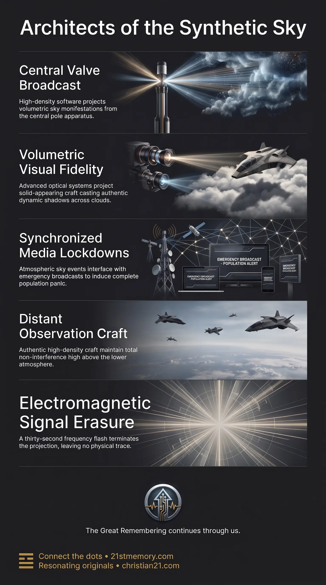

Project Blue Beam
Project Blue Beam — An advanced optical operation projects a synthetic extraterrestrial battle across the skies, run as holographic software rather than an arriving fleet.

Project Blue Beam — An advanced optical operation projects a synthetic extraterrestrial battle across the skies, run as holographic software rather than an arriving fleet.

The Project Blue Beam Sky War — The sky event stages false aerial combat until the thirty-second EMF flash cuts the transmission and the craft vanish.
Project Blue Beam—alternatively designated as Project Bluebeam, Blue Beam, or the holographic invasion—is an advanced optical operation engineered to project a synthetic, planetary-scale extraterrestrial battle across the skies of the realm. Rather than an arrival of an authentic extraterrestrial fleet, the entire engagement constitutes advanced holographic projections running on a sophisticated software program. These optical manifestations saturate the atmospheric canopy with the visual and auditory hallmarks of an interstellar conflict, generating total sensory conviction for the surface population. Deployed during the final collapse phase of the lower-density paradigm, the operation functions as an all-encompassing visual climax that commands collective focus, disorienting observers before higher energetic shifts finalize their transitions.
The defining reality of the invasion is that there are no authentic combatant craft operating within the lower atmosphere; the entire airborne confrontation is an artificial display operated through high-density software programming. While authentic soul-family craft may hold distant observation posts high above the realm, they maintain total operational non-interference, refusing to enter the fray or interact with the lower-density plane. Consequently, every craft observed engaging in dogfights, maneuvering in formation, or illuminating the clouds is entirely an optical projection.
The public has been conditioned to evaluate holographic technology through the narrow lens of primitive consumer novelties, such as public demonstrations where a whale appears to breach an indoor sports arena. That commercial three-dimensional display is merely the cheap public cousin of the genuine technology employed for the operation. The authentic systems, driven by benevolent higher-density engineering, generate total physical realism that effortlessly triggers deep biological shock and ancestral cellular memories of previous civilization resets.
This artificial engagement has a definitive, non-negotiable operational boundary. The moment the planetary EMF pulse initiates, the transmission cuts completely. Once the EMF begins, there will be no Blue Beam craft left in the air, and not a single craft will have landed anywhere on the ground.
The entire holographic infrastructure is broadcast from the central hub of the world plane: the Valve located at Mt Meru (also recognized as Black Rock or Hyperborea at the true center/North Pole). Because this geographic seat rests at the epicenter of the realm’s toroid field inside the perimeter of the ice wall, a single centralized transmission apparatus can seamlessly blanket the entire dome. The technology operated from this point belongs to high-density origins, completely distinct from flat terrestrial illusions or consumer-grade light scattering. It projects volumetric, solid-appearing objects that register with total optical density, dynamic shadow casting, and complete spatial authenticity.
To comprehend the gap between surface knowledge and the hardware driving Blue Beam, one must examine public three-dimensional projections utilized in Far Eastern shopping complexes and stadiums—specifically the well-known exhibition featuring a whale in the basketball arena. While commercial displays employ basic light refraction to mimic depth in controlled indoor settings, they remain primitive novelties. The high-density projection apparatus anchored at the central Valve operates at an entirely different tier of physics, casting atmospheric, interactive-seeming craft that traverse cloud layers, produce directional illumination, and convincingly simulate heavy aerospace warfare.
Throughout the sky event, the projections render a multi-layered aerial theater characterized as an Alien Sky Battle or synthetic warfare between rival extraterrestrial factions. The operation does not rely solely on direct sightlines; it interfaces directly with emergency broadcasts running across the Emergency Broadcast System (EBS) during mandatory lockdowns. Broadcast networks broadcast fabricated footage showing mass abductions, depicting hundreds of individuals at a time being levitated from public spaces and beamed into craft hulls.
This combination of live atmospheric visuals and media terror triggers acute survival panic. Crowds witness the skies above their cities fill with thousands of maneuvering craft, causing populations to scatter indiscriminately into sheds, basements, and vehicles in a desperate bid to escape abduction. Despite the staggering visual fidelity, no physical entities ever disembark from these ships, no boots touch the earth, and no actual biological abductions occur through the projections. The entire sequence is an orchestrated simulation.
The holographic display is structured to run continuously across a condensed operational timeline, potentially lasting up to a couple of weeks, though likely less. It sustains maximum psychological tension until the exact threshold of the energetic transition. The conclusion of the operation is absolute and binary: the moment the bright white flash of the thirty-second EMF discharge initiates, the transmission cuts out across all frequencies. Instantly, the synthetic fleets vanish. There are zero Blue Beam craft left suspended in the sky, zero descending, and none wreckage-bound or landed on the terrain. The sky returns to absolute stillness within thirty seconds.
Project Blue Beam operates in direct coordination with the societal paralysis imposed by the EBS lockdown. The confinement of the population to their residences ensures that the combination of sky-wide optical projections and media broadcasts achieves maximum psychological leverage.
The operation also serves as the final visual bridge leading into the thirty-second EMF flash. While the surface population remains fixated on what appears to be a third world war fought in the clouds against extraterrestrial entities, the simulation software reaches its terminal operational cycle. The sudden cessation of the projections at the instant of the white flash leaves the remaining population gazing into an empty sky, completely isolated from the synthetic armada that held their attention seconds earlier.
The overarching function of Project Blue Beam is the induction of peak catalytic trauma. By confronting the surface populace with a hyper-realistic, undeniable invasion scenario, the projection system forces an immediate breakdown of legacy cognitive frameworks, societal complacencies, and conventional institutional authority. The sheer terror of seeing skies filled with battling craft breaks open entrenched psychological calcifications, exposing the fragility of secular narratives.
Furthermore, because the operation leaves zero physical trace—leaving no landed hulls, no debris fields, no wreckage, and no physical alien occupiers following the thirty-second EMF event—survivors are instantly confronted with the artificial nature of what they witnessed. The abrupt disappearance of the entire invasion fleet strips away all conventional explanations, leaving those who remain to confront the reality of the simulation, the holographic nature of the sky, and the total uninstallation of the prior paradigm.
This topic is free to share. Support the archive →